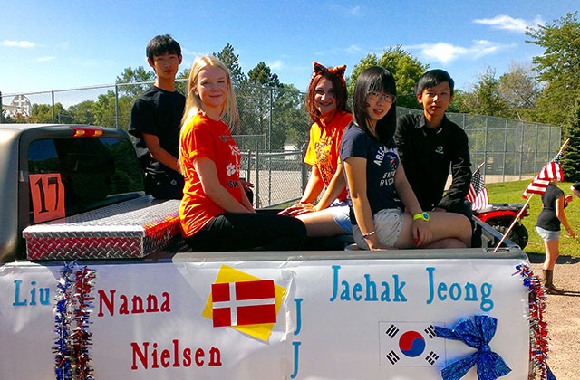
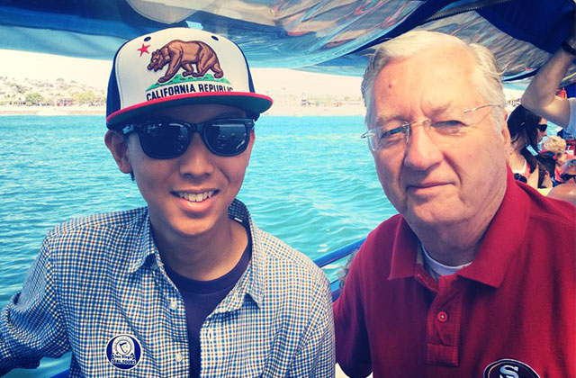
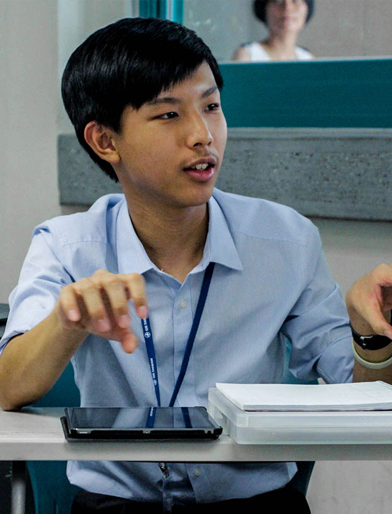
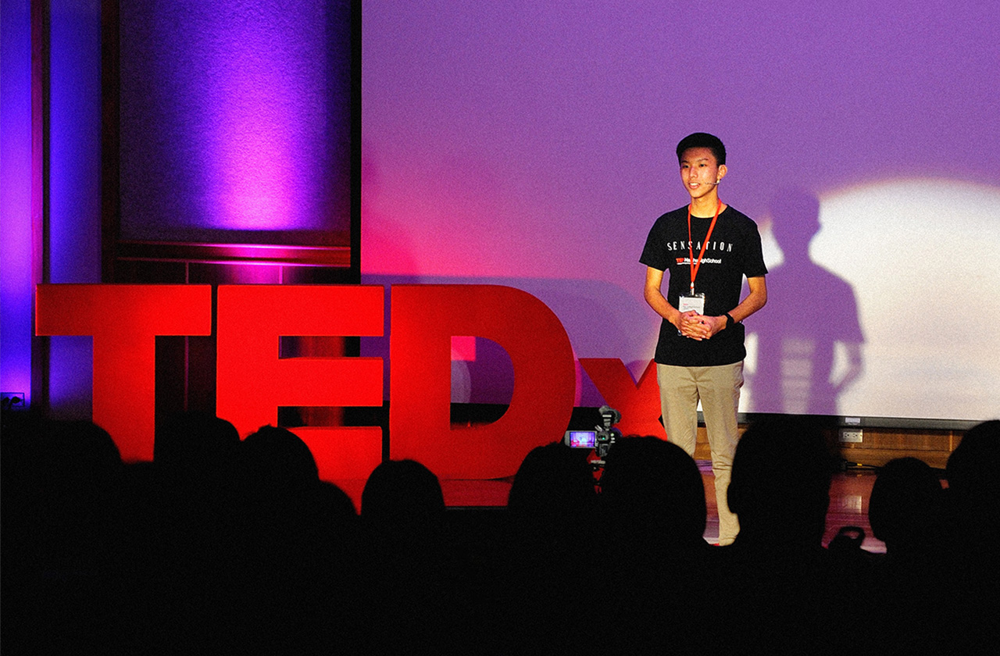
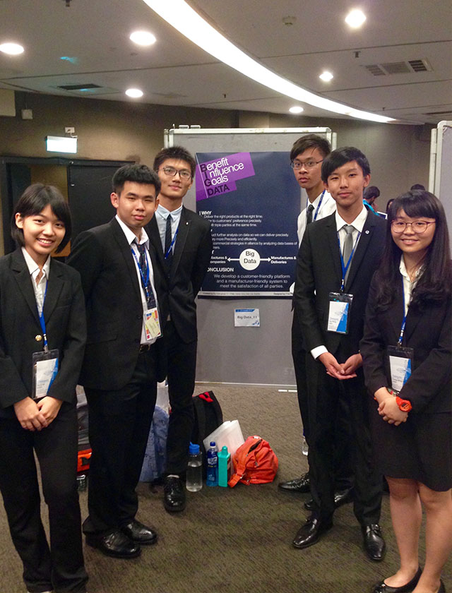
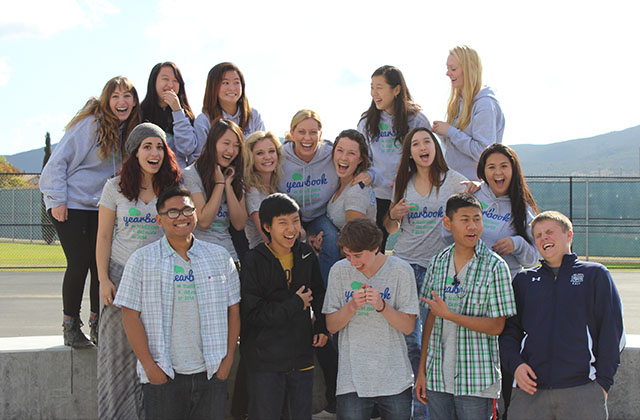
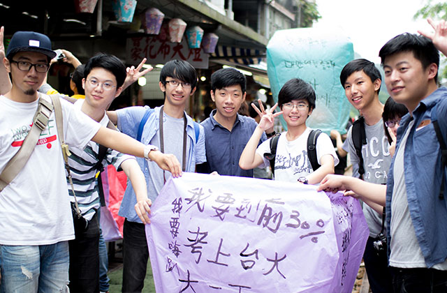

關於郭力銘
郭力銘是一位具有創新點子且對生命充滿熱情的高中生。他對平面設計、科技與電影製作都感到相當有興趣。他自年幼即開始自學網頁撰寫，並於小學三年級時創立自己的科技部落格。那個部落格於三年內獲得了多於六萬位不同訪客的拜訪。郭力銘於九歲時發佈了他的第一個個人網站，隨後又發布了許多系列網站。
力銘於國中畢業後赴美參與交流學生計畫一年。獨自在異鄉的一年，使他更獨立、更有創新點子、也更有上進之心。即使在這年之中他需要面對文化衝擊，還要克服語言障礙，他的熱情還是持續的在燃燒。這年中他獲得了一個 Art Exhibition Award 獎與一個 Filmmaking Recognition Award 獎。
力銘在他的個人部落格，Phil 的美國交換學年，分享他於異國求學所遇到的酸甜苦辣。那是一個關於他於美國時每日生活的日記部落格，對即將成為交換學生的學生能提供很多資訊，對他們會很有幫助。他也為此部落個製作了一個手機閱讀應用程式，給手機使用者帶來更好的閱讀體驗。
力銘是許多會議的參加者，例如一年一度的全球集思論壇。他亦是一位活躍的模聯咖，也就是人們所謂的 MUNer。最近，力銘於他就讀的高中成立了校內新聞網，希望能帶給學校內的學生與外校的學生一個更有趣的訊息傳遞方式，讓他們以更現代、科技化的方式知道學校內正在與即將發生什麼趣事。
2015 年稍早，郭力銘被受邀至一場 TEDx 活動進行演講。他分享了他身為一位國際交流學生的體驗，與他如何平衡於課業上與於課外活動所花的時間。他演講的影片可以在 YouTube 上觀賞。力銘於他的高二學年開始成為自學生，或台北市所謂的非學校型態實驗教育學生。如此他擁有了更多時間，他打算開始學習時他更多電腦語言。
身為一位接受台灣高中教育的學生或許需要面對許多壓力，但只要有一顆擁有想要實現夢想激情的心，沒有不可能的事。正如俗話所言: “只要心能想得到, 就一定可以做得到.” (What the mind can conceive, humankind can achieve.)











向右滑動還有更多照片
立足台灣 放眼世界
我出生於台灣，也是在台灣長大的。因為擁有能至美國交流一年的機會，我能很了解並尊重不僅是中華文化，更包含西方文化。我能流利的說普通話中文與英文，而我正在學習西班牙語。我能與來自世界各地的人合作。然而，我的心中永遠只有一個目標，那就是，讓與我合作的人感到開心與滿意。
深根中華文化
放眼看到全世界
3
個辦公室
2
種語言
1
個目標